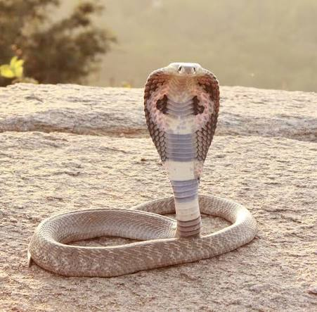
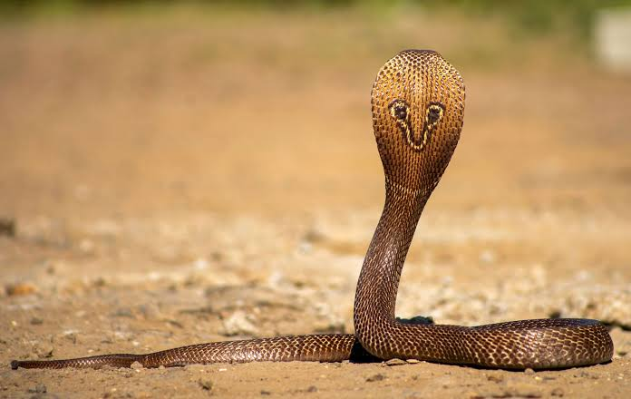
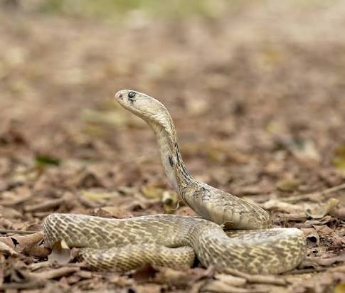

Know Your Snakes
Learn about snakes, their scientific names, habitats and behaviour.
01. Indian Spectacled Cobra



Naja naja
Group: Elapid
About: A venomous cobra species known for its expandable hood and has a" u " shape design on there back
Habitat: Found in a variety of natural and human-modified habitats.
02. Common Krait
Bungarus caeruleus
Group: Elapid
About: A venomous snake, generally recognised by its dark body and pale crossbands.
Behaviour: Primarily nocturnal.
03. Russell's Viper
Daboia russelii
Group: Viper
About: A venomous snake with distinctive rows of dark oval markings.
Habitat: Occurs in different open habitats.
04. Indian Rat Snake
Ptyas mucosa
Group: Colubrid
About: A non-venomous species that plays an important role in controlling rodents.
Behaviour: Active during the day and capable of climbing.